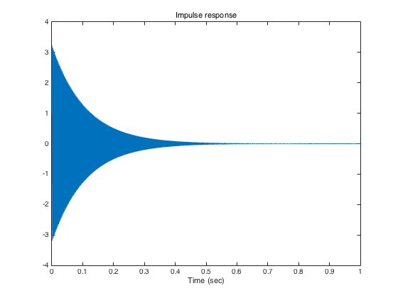
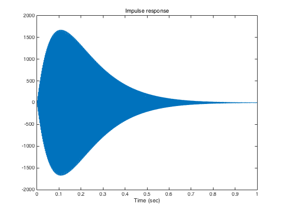
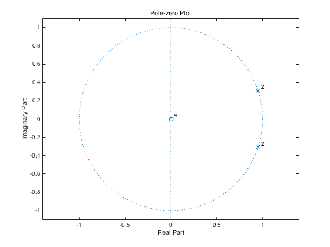
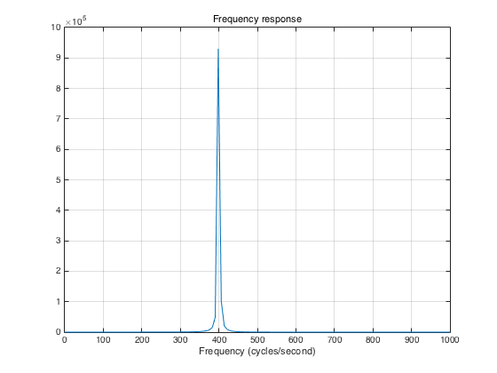

makefilter_03.m
Filter twice for gradual rise time
Contents
clear
Difference equation
y(n) = b0 x(n) - a1 y(n-1) - a2 y(n-2)
Fs = 8000; % sampling frequency (sample/second) F1 = 400; % frequency (cycles/second) f1 = F1/Fs % normalized fequenccy (cycles/sample) om1 = 2*pi * f1; % normalized fequenccy (radians/sample) Ta = 0.5; % duration (seconds) [time till 1% amplitude] r = 0.01^(1/(Ta*Fs)) a = [1 -2*r*cos(om1) r^2] % recursive part b = 1; % non-recursive part
f1 =
0.0500
r =
0.9988
a =
1.0000 -1.8999 0.9977
Impulse response
Note that the amplitude profile has the form E(n) = n r^n.
N = Fs; n = 0:N; imp = [1 zeros(1, N)]; h = filter(b, a, imp); figure(1) clf plot(n/Fs, h) title('Impulse response'); xlabel('Time (sec)')
Listen
soundsc(h, Fs)
Twice the filter
a2 = conv(a, a) b2 = 1; h2 = filter(b2, a2, imp); plot(n/Fs, h2) title('Impulse response'); xlabel('Time (sec)') % What is the peak amplitude in terms of f1 and r?
a2 =
1.0000 -3.7998 5.6051 -3.7911 0.9954
 Listen
soundsc(h2, Fs)
Pole-zero plot
Note that the poles double poles
zplane(b2, a2)
title('Pole-zero Plot')
 Frequency response
The frequency response has a peak at f1
[H2, om] = freqz(b2, a2); f = om / (2*pi) * Fs; plot(f, abs(H2)) title('Frequency response') xlabel('Frequency (cycles/second)') xlim([0 1000]) grid